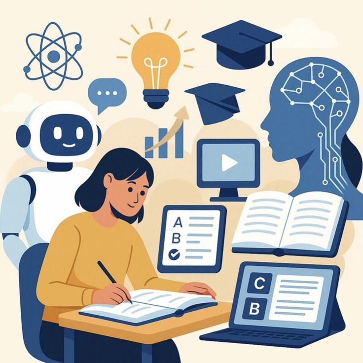

| HOME | ANALYSIS & INTERPRETATION | FINDINGS & RECOMMENDATIONS |
What is the impact of online education on learners on a national level?
Online education has become one of the most important developments in modern education. It allows learners to access educational content through the internet using computers, tablets and smartphones. Learners can attend virtual lessons, access study materials and complete assessments from different locations.
At a national level, online education has helped increase access to learning opportunities and allowed education to continue during disruptions such as school closures and lockdowns. Educational platforms, learning management systems and virtual classrooms have become essential tools in modern education.
Despite its advantages, online education also presents challenges. Access to reliable internet, digital devices and affordable data remains a concern for many learners. These challenges affect the quality and effectiveness of online learning experiences.

The impact of online education affects learners, teachers, parents and the education system as a whole. Understanding both the benefits and challenges can help improve educational outcomes and reduce inequalities in access to learning opportunities.
Grade 12 CAT PAT 2026 |Tyra Patrick Impact of Online Education on Learners on a National Level